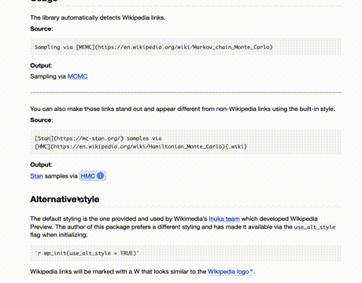

Wikipedia Preview for R Markdown documents.
| Format/Generator | Compatibility |
|---|---|
| HTML Vignette/Document | ✅ Confirmed |
| pkgdown article | ✅ Confirmed |
| distill article | ✅ Confirmed |
| distill blog/website | Unknown (but probably works) |
| blogdown blog/website | ✅ Confirmed |
| bookdown website | Unknown |
NOTE: Wikipedia Preview standalone JS component can be used on any website. There is also an official WordPress plug-in.
Installation
You can install the development version of wikipediapreview like so:
# install.packages("remotes")
remotes::install_github("bearloga/wikipediapreview-r")Example
To initialize include the following anywhere in your R Markdown document:
`r wikipediapreview::wp_init()`If you prefer, you can initialize using a designated chunk instead:
```{r wp-init, results='asis', echo=FALSE}
library(wikipediapreview)
wp_init()
```Links to Wikipedia articles in your R Markdown document will automatically have popup cards showing your readers a preview of the linked article:

Demonstration of Wikipedia Preview on a rendered R Markdown vignette